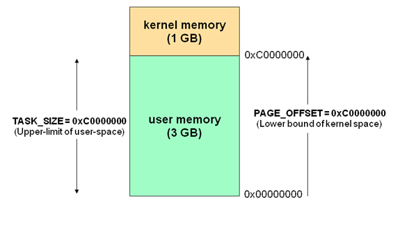

Rings
在计算机科学中, 分级保护域（英语：hierarchical protection domains），经常被叫作保护环（Protection Rings），又称环型保护（Rings Protection）、CPU环（CPU Rings），简称Rings。这是一种用来在发生故障时保护数据和功能，提升容错度，避免恶意操作 ，提升计算机安全的设计方式。
（来自维基百科）
工作在不同Ring中的对象对资源有不同的访问级别。Rings是从最高特权级（通常对应最小的数字）到最低特权级（最大的数字）排列的。在大多数操作系统中，Ring 0拥有最高特权，并且可以和最多的硬件直接交互（比如CPU，内存），同时内层Ring可以随便使用外层Ring的资源。
- Ring 0用于内核代码和驱动程序
- Ring 1-2用于设备驱动程序
- Ring 3用于非特权代码（几乎所有的用户程序都在这一级别）
Rings的概念最早出现于x 86保护模式的设计中。Intel的初衷是让驱动存在于此Ring 1-2，但现代操作系统通常将驱动也放在Ring 0上。
内核空间（Kernel space ）与用户空间（User space ）
Kernel space 是 Linux 内核的运行空间（Ring0），User space 是用户程序的运行空间（Ring3）。通过分环隔离实现了操作系统的稳定性及可用性，即使用户的程序崩溃了，内核也不受影响。
下面描述用户空间与内核空间交互情况（来自互联网）：

运行在Kernel space的进程拥有CPU环最高权限，可以执行任意命令，调用系统的一切资源；User space 只能执行简单的运算，不能直接调用系统资源，必须通过系统接口（system call），才能向内核发出指令。
1 | str = "my string" // 用户空间 |
上面代码中，第一行和第二行都是简单的赋值运算，在 User space 执行。第三行需要写入文件，就要切换到 Kernel space，因为用户不能直接写文件，必须通过内核安排。第四行又是赋值运算，就切换回 User space。
内核空间（Kernel space）与用户空间（User space）空间分配
对 32 位操作系统而言，它的寻址空间（虚拟地址空间，或叫线性地址空间）为 4G（2的32次方）。最高的 1G 字节(从虚拟地址 0xC0000000 到 0xFFFFFFFF)由内核使用，称为内核空间。而较低的 3G 字节(从虚拟地址 0x00000000 到 0xBFFFFFFF)由各个进程使用，称为用户空间。当进程运行在Ring0级别时被称为运行在内核态，而运行在Ring3级别时被称为用户态。
下面描述了每个进程寻址空间的分配情况（来自互联网）:

内核空间是所有进程共享，用户空间是当前进程独享
内核空间中存放的是内核代码和数据，而进程的用户空间中存放的是用户程序的代码和数据。不管是内核空间还是用户空间，它们都处于虚拟空间中。
整体架构
通过用户空间和内核空间的角度看一看Linux系统的架构(此图来自互联网)：

当用户空间运行进程需要使用硬件资源或设备驱动时，通过调用内核空间暴露的接口（System Call）来申请资源或写入内核空间的高速页缓存
内核空间进程会实时调用（fsync）或由操作系统统一调度flusher内核线程将（write）数据同步到磁盘
1
2
3
4
5以Mysql为例：
innodb_flush_log_at_trx_commit 1 (fsync)
事务提交时，进程会从用户空间应用缓存把数据copy到内核空间高速页缓存，并同时调用系统提供sync函数将数据写入磁盘
innodb_flush_log_at_trx_commit 2 (write)
事务提交时，进程会从用户空间应用缓存把数据copy到内核空间高速页缓存，等待flusher内核线程将数据写入磁盘从架构图可以看出内核空间进程可以操作设备程序（网卡程序、显卡程序）和硬件设备（键盘、鼠标、音箱）
[参考链接]